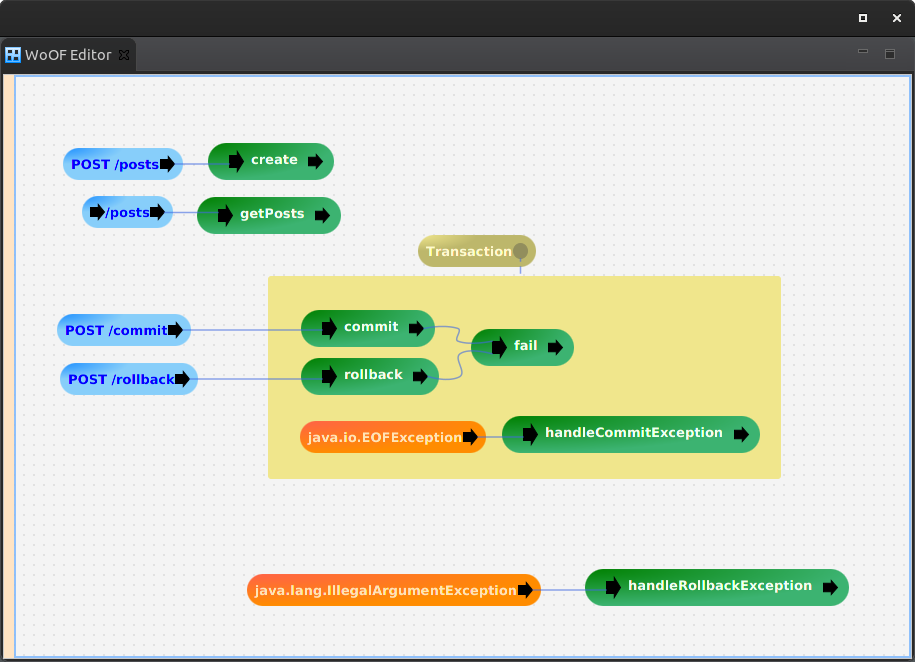

This tutorial demonstrates providing transaction context to an OfficeFloor web application. OfficeFloor refers to context as Governance.
The example used for this tutorial is adding posts via a REST service.
The following is the application.woof configuration for the example application.
The transaction is managed via GovernanceSource. This is a generic means to provide context around logic with the application.
In this particular case, the SpringDataTransactionGovernanceSource is used to provide transaction management over Spring repositories.
To enable transaction management, add a Governance item. Once added, the scope of the transaction (governance) must be specified. This is achieved by adding the area around all logic in scope for the transaction. Logic components within the area will be managed by the transaction.
The transaction will be started when flow moves from a logic component outside the area to a logic component within the area.
The transaction will end in either two ways:
Note: that exception handling within the transaction area will continue the transaction.
Note: completing the flow within the transaction scope also commits the transaction.
The transactional logic is as follows:
public class TransactionLogic {
public IllegalArgumentException rollback(Post post, PostRepository repository) {
repository.save(post);
return new IllegalArgumentException("rolled back");
}
public EOFException commit(Post post, PostRepository repository) throws EOFException {
repository.save(post);
return new EOFException("committed");
}
public void fail(@Parameter Exception failure, PostRepository repository, TeamMarkerBean marker) throws Exception {
repository.save(new Post(null, "Additional"));
throw failure;
}
}
This will attempt to write two posts to the database. As per the configuration, the exception handled is either within the transaction (committing) or outside (roll back).
The application also has the following Team configuration to demonstrate Spring Data transaction working across threads.
<teams> <!-- Demonstrates Spring Data Transaction working across different threads --> <team source="net.officefloor.frame.impl.spi.team.ExecutorCachedTeamSource" type="net.officefloor.tutorial.transactionhttpserver.TeamMarkerBean" /> </teams>
To enable use of Spring data in OfficeFloor's multi-threaded Team environment, add the following dependency:
<dependency> <groupId>net.officefloor.spring</groupId> <artifactId>officespring_data</artifactId> </dependency>
This will ensure the Spring Data transaction thread locals are propagated across Threads.
The following unit test demonstrates committing the transaction (as exception handled within transaction).
@RegisterExtension
public final MockWoofServerExtension server = new MockWoofServerExtension();
private static final String POST_CONTENT = "Interesting post article";
@Test
public void commit() throws Exception {
// Create, will handle exception and commit
MockWoofResponse response = this.server
.send(MockWoofServer.mockJsonRequest(HttpMethod.POST, "/commit", new Post(null, POST_CONTENT)));
response.assertResponse(201, "committed");
// Ensure persisted to database
response = this.server.send(MockWoofServer.mockRequest("/posts"));
response.assertJson(200, Arrays.asList(new Post(1, POST_CONTENT), new Post(2, "Additional")));
}
The following unit test demonstrates rolling back the transaction (as exception handled outside transaction scope).
@Test
public void rollback() throws Exception {
// Attempt to create (but should roll back)
MockWoofResponse response = this.server
.send(MockWoofServer.mockJsonRequest(HttpMethod.POST, "/rollback", new Post(null, POST_CONTENT)));
response.assertResponse(500, "rolled back");
// Ensure not persisted to database
response = this.server.send(MockWoofServer.mockRequest("/posts"));
response.assertJson(200, Arrays.asList());
}
The next tutorial covers variables.